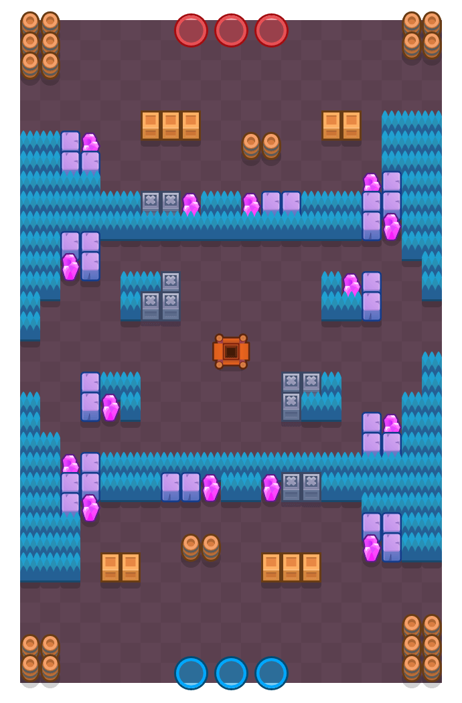
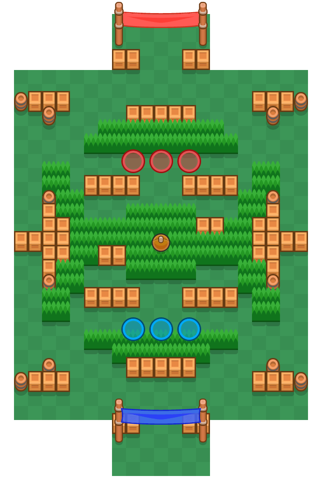
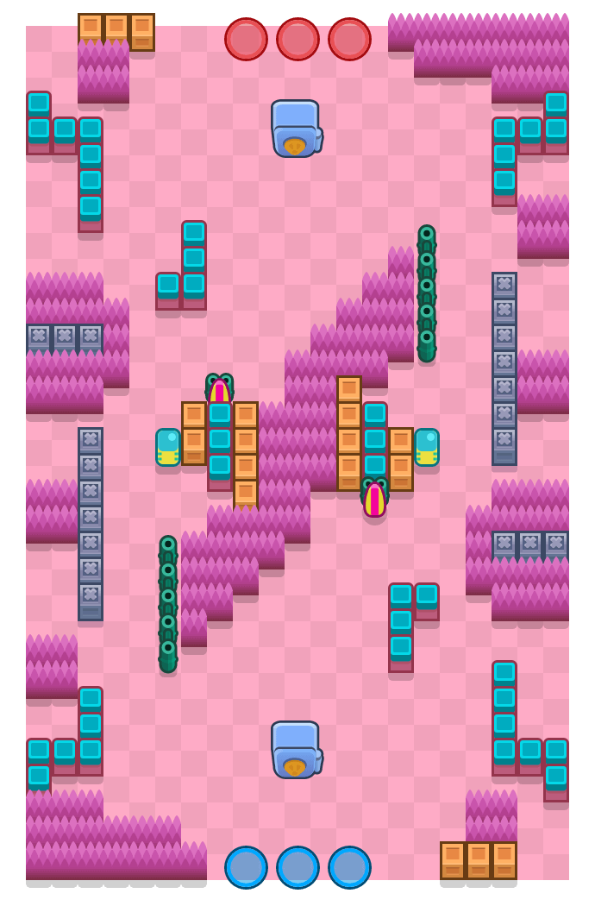

Brawl Starsis a fast-paced 3v3 multiplayer battle royal made for mobile (note 1).
There are currently 16 different game modes you can play with a total of 84 revolving maps.
Shown below is some of the most notable 3v3 maps for Gem Grab, Brawl Ball and Heist.



Currently, there are 79 characters in the game with all sorts of different brawling styles.
The game constantly adds new characters and various features that keep users excited for whats to come.
Brawl Stars captures the attention of players with their fast-paced matches and many different rewards.
The game features a trophy road where you can unlock new characters, earn more bling (to buy a variety of different skins),
XP to level up brawlers and coins and gems to use in the shop. They also include seasons with rewards for completing missions
that are within the theme of the season.
The soundtrack of Brawl stars definitely adds to the overall effect and excitement of the game.
The soundtrack will become more intense if the game goes into over time or when it becomes 1v1 on solo and duo showdown.
This really increases the overall fun of the game as it adds on to the intensity of the match.
The game also features varying soundtracks for wins, loses and draws with matching animation for the brawler
showing either pride or sadness for losing.
Here is the audio clip of the winning sound track (note 4):
This game is very social there are features where you can pick stickers/emojis
to display emotion during a match which can be helpful for communicating to teammates or commonly used as playful taunting.
There is also an ability to play with friends which can help strategize for better gameplay.
The game also features different clubs you can join and events involving clubs to maximize the total rewards given by
adding up every club members contribution to the challenge.